Ремонт КАМАЗ
Ремонт КАМАЗ
 Ремонт МАЗ
Ремонт МАЗ
 Ремонт УРАЛ
Ремонт УРАЛ
Двигатели
Двигатель проверяют по симптомам: перегрев, дым, потеря тяги, падение компрессии, расход масла или охлаждающей жидкости. В работу входят диагностика ДВС, ГБЦ, компрессия и замена масла.
Диагностика, ТО и ремонт ДВС, КПП, ходовой, тормозной системы, гидравлики, электрики и SCR/AdBlue. Работаем с юрлицами по договору, согласуем смету до начала работ, выдаём закрывающие документы и гарантию на работу.
Категории техники
Крупные входы по типу техники помогают быстро выбрать нужное направление: грузовой автомобиль, тягач, полуприцеп, автобус, спецтехника или кузовные работы.
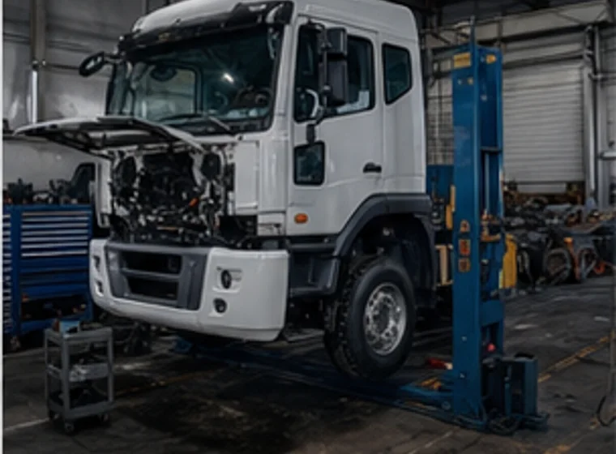
Грузовое СТО Ремонт грузовых автомобилей Диагностика, ТО и ремонт основных систем грузового автомобиля.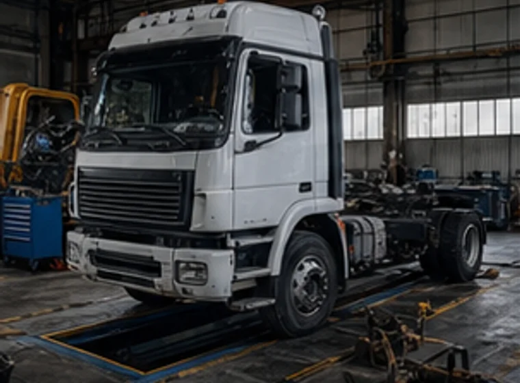
Тягачи Ремонт седельных тягачей Работы по двигателю, трансмиссии, ходовой, тормозам и электрике.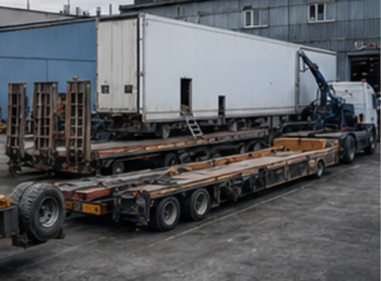
Прицепная техника Ремонт полуприцепов и тралов Рамы, оси, подвеска, тормозная система и крепления.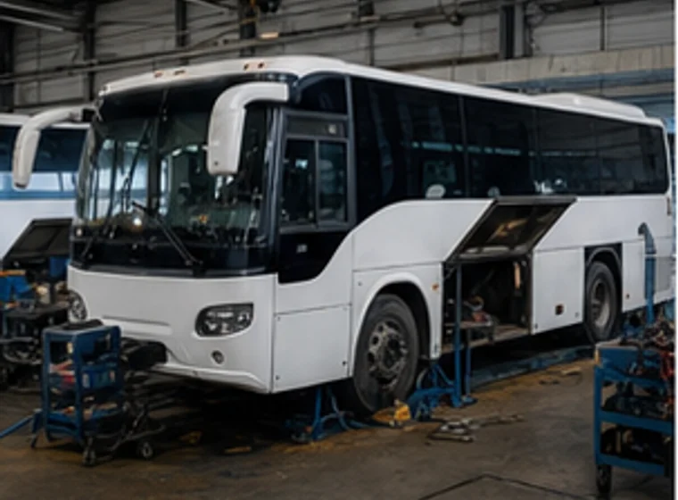
Пассажирская техника Ремонт автобусов Обслуживание ходовой, тормозов, электрики и силовых агрегатов.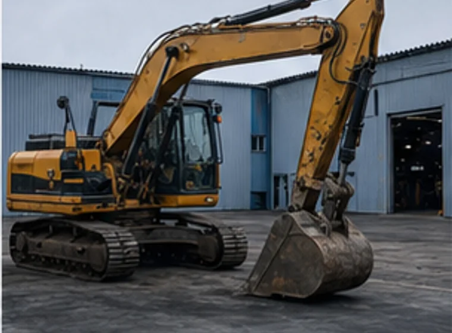
Спецтехника Ремонт спецтехники Гидравлика, двигатель, ходовая, электрика и рабочие механизмы.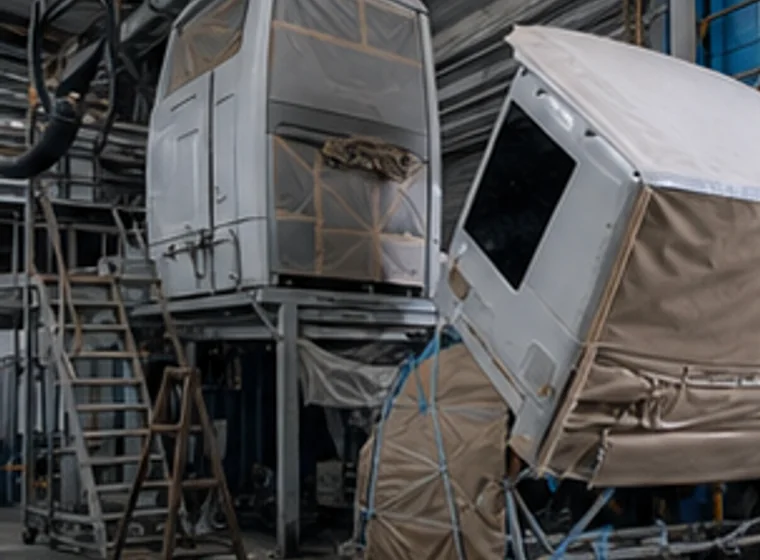
Кузовные работы Кузовной ремонт грузовой техники Подготовка, восстановление элементов и окраска грузовой техники.Ремонт грузовиков
КАМАЗ, МАЗ и УРАЛ выделены как официальный сервисный слой. Остальные марки показываем как популярные направления для грузового автосервиса.


Типы спецтехники
Для спецтехники важны не только узлы, но и тип машины: у бульдозера, автокрана, погрузчика или манипулятора разные нагрузки и разные сценарии ремонта.
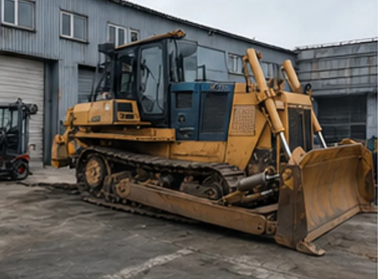
Ремонт бульдозеровХодовая, гидравлика, двигатель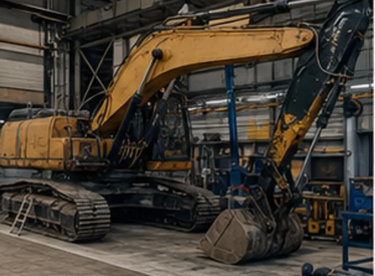
Ремонт экскаваторовГидравлика, стрела, электрика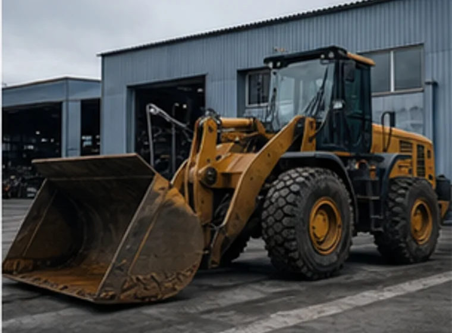
Ремонт погрузчиковДВС, мосты, рабочее оборудование Ремонт автокрановШасси, гидравлика, опоры
Ремонт автокрановШасси, гидравлика, опоры
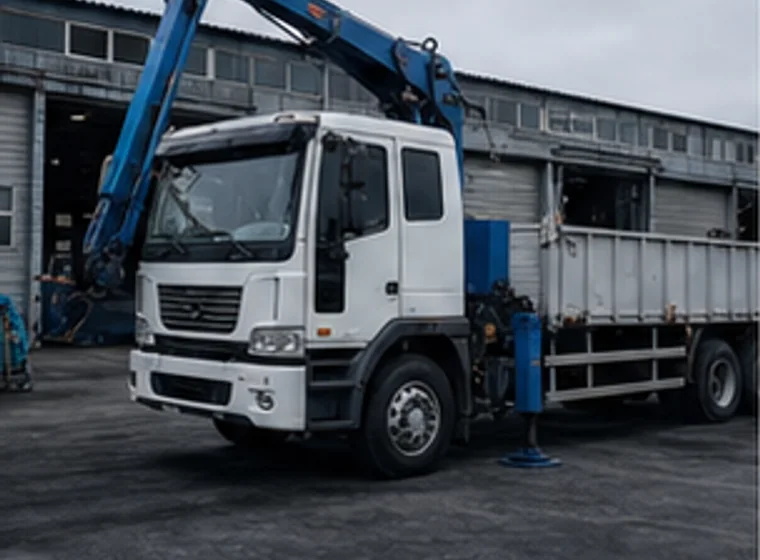
Ремонт манипуляторовКМУ, гидролинии, шасси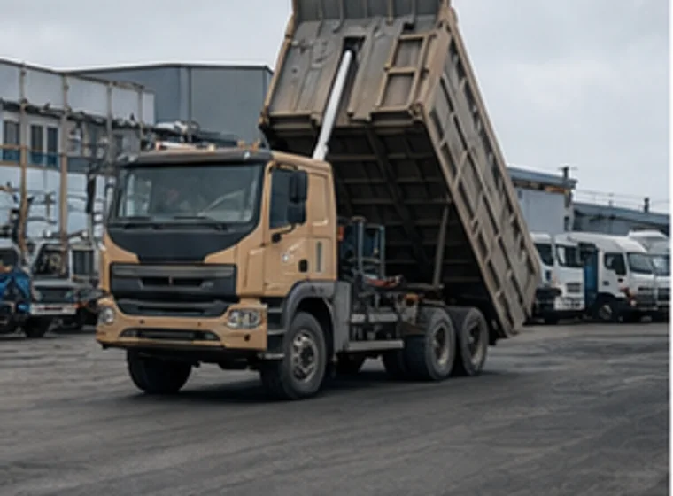
Ремонт самосваловКузов, гидравлика, рама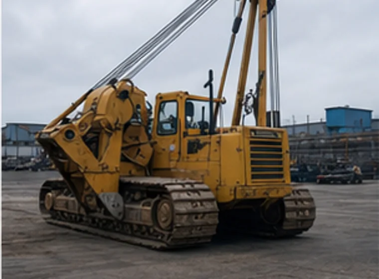
Ремонт трубоукладчиковГусеничная база и гидравлика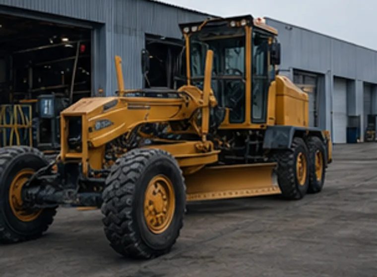
Ремонт грейдеровХодовая и рабочее оборудование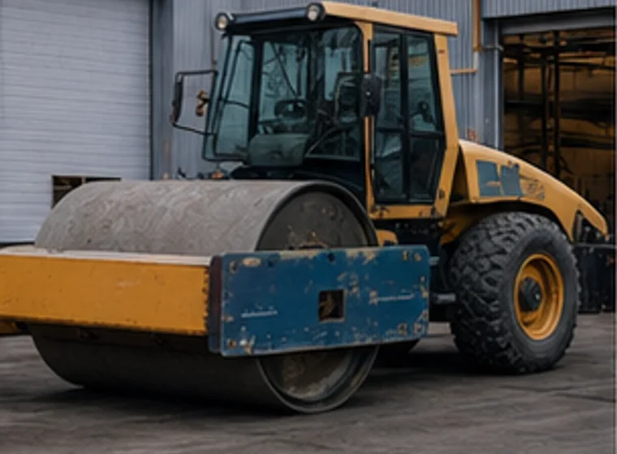
Ремонт дорожных катковВиброузел, гидравлика, ДВС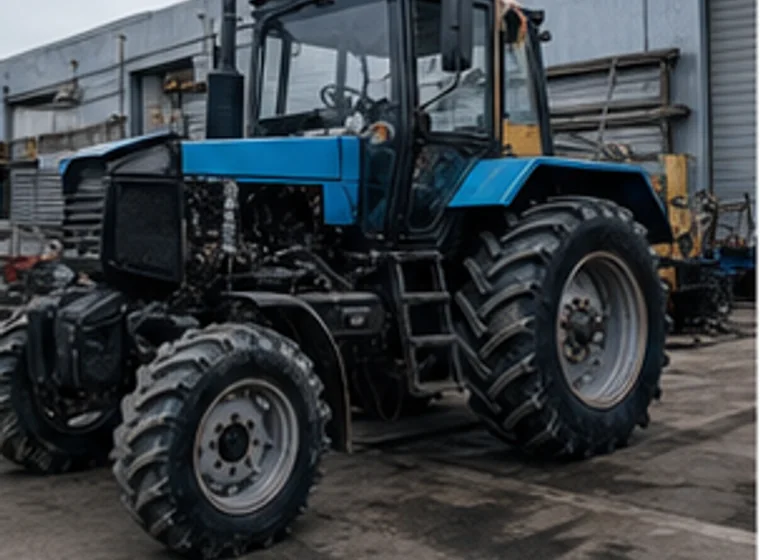
Ремонт тракторовДвигатель, КПП, электрикаПеречень услуг
Сервис выполняет диагностику, техническое обслуживание и ремонт основных узлов: двигатель, КПП, ходовая часть, тормоза, гидравлика, электрика, топливная система, охлаждение, SCR/AdBlue, полуприцепы и тралы. Если неисправность не ясна, обращение начинается с диагностики проблемного узла.
Двигатель проверяют по симптомам: перегрев, дым, потеря тяги, падение компрессии, расход масла или охлаждающей жидкости. В работу входят диагностика ДВС, ГБЦ, компрессия и замена масла.
КПП и трансмиссию проверяют при шуме, затрудненном переключении, вибрации, течах и люфтах. Направление включает коробки передач, раздаточные коробки, сцепление, карданы, мосты и редукторы.
Ходовая и тормоза связаны с безопасностью рейса и работой на объекте. Проверяются подвеска, ступицы, оси, рамы, тормозная система и углы установки колес грузовиков.
Гидравлику проверяют при падении давления, течах, рывках оборудования и слабой работе навесных механизмов. В работу входят гидроцилиндры, гидронасосы, гидрораспределители, ремонт и замена РВД.
Автоэлектрика начинается с диагностики цепей и ошибок. Проверяются проводка, датчики, разъёмы, стартер, генератор и электронные системы, которые влияют на запуск и работу техники.
Топливную систему проверяют при потере тяги, нестабильной работе двигателя, дыме и проблемах запуска. Основные задачи: диагностика топливной аппаратуры, форсунок и связанных узлов.
Система охлаждения влияет на температуру двигателя и ресурс агрегатов. Проверяются радиатор, термостат, патрубки, течи и причины перегрева под нагрузкой.
SCR и AdBlue проверяют по ошибкам NOx, дозирования, насоса, дозатора и проводки. Цель диагностики — восстановить штатную работу системы без отключения экологического контура.
ТО помогает планово проверить технику до поломки в рейсе или на объекте. Проверяются основные системы, масла в агрегатах и состояние узлов перед ремонтом или выпуском в работу.
Полуприцепы и тралы оценивают отдельно от тягача: рама, подвеска, тормозная система, оси, ступицы и крепления получают другие нагрузки при работе.
Приём в ремонт
Перед приездом мастер уточняет марку, тип техники, проблемный узел и текущую ситуацию. Это помогает выбрать участок диагностики и понять, какие данные нужны для передачи техники в ремонт.
Назовите марку, тип техники, проблемный узел, симптомы и место, где находится машина. Если причина не ясна, достаточно описать, что изменилось в работе техники.
Технику принимают на ремонтной базе в Сургуте. Мастер осматривает машину, фиксирует задачу и определяет, с какой системы начинать проверку.
Проверяется агрегат, система, шасси или навесное оборудование. По результатам диагностики становится понятно, какие работы нужны и какие связанные системы стоит проверить.
Мастер согласует перечень работ, запчасти и последовательность ремонта. Если диагностика показывает смежную неисправность, ее отдельно обсуждают с заказчиком.
После ремонта заказчику передают технику и объясняют, какие работы выполнены. При необходимости мастер дает рекомендации по дальнейшей эксплуатации.

Паспорт сервиса
РемСД принимает грузовые автомобили, спецтехнику, полуприцепы и тралы. На базе выполняют диагностику, агрегатный ремонт, работы по ходовой, тормозам, гидравлике, РВД, электрике, топливной системе и охлаждению.
Ремонтная база
На фотографиях видны территория базы, ремонтный цех, техника в работе, агрегатные зоны и оборудование для обслуживания грузовых автомобилей и спецтехники.
Документы
Документы РемСД подтверждают сервисные компетенции: официальные сертификаты МАЗ и УРАЛ, сертификат обучения Weichai по двигателям и компонентам, свидетельство Адверс по автономным отопителям и сертификат соответствия по ремонту грузовой техники.
Ремонтная база
Ремонтная база принимает грузовые автомобили, спецтехнику, полуприцепы и тралы. Основные зоны работ: приём и осмотр техники, агрегатный ремонт, ходовая и тормоза, гидравлика, электрика, полуприцепы и тралы.
Смотреть фотографии базыПриём и осмотр грузовых автомобилей, спецтехники, полуприцепов и тралов. Мастер оценивает шасси, агрегаты и системы на базе.
Двигатели, ГБЦ, КПП, мосты, раздаточные коробки и сцепление. Эти работы связаны с диагностикой смежных систем.
Подвеска, ступицы, оси, тормозная система и развал-схождение грузовиков. Проверка нужна после износа, удара или ремонта узлов.
Давление, утечки, гидроцилиндры, гидронасосы, гидрораспределители, ремонт и замена рукавов высокого давления.
Проводка, датчики, стартер, генератор, компьютерная диагностика и считывание кодов ошибок.
Рамы, подвеска, тормозная система, оси, ступицы и подготовка тралов к дальнейшей работе.
География работ
Ремонтная база принимает технику компаний из Сургута и ХМАО. На карту вынесен адрес для проезда, а перед приездом лучше позвонить мастеру и назвать марку, тип техники и проблемный узел.
Вопросы клиентов
Ответы на вопросы, которые чаще всего появляются перед передачей техники в ремонт.
Адрес сервисного центра: г. Сургут, ул. Домостроителей, 13. Перед приездом позвоните мастеру: так проще согласовать приём грузового автомобиля, спецтехники, полуприцепа или трала.
В разделе сертификатов показаны документы МАЗ и УРАЛ, сертификат обучения Weichai, свидетельство Адверс и сертификат соответствия. Если для заявки нужен конкретный документ по марке техники, уточните его у мастера перед обращением.
РемСД работает как официальный сервисный центр по КАМАЗ, МАЗ и УРАЛ. Также принимает Volvo, JCB, Scania, Renault Trucks, New Holland, Mercedes-Benz, MAN, Komatsu, John Deere и УЗСТ.
Назовите марку, тип техники, проблемный узел или систему, текущую ситуацию с машиной и местоположение техники. Если известен код ошибки или симптом появился после ремонта, это тоже стоит сказать сразу.
Да. Сервис принимает полуприцепы и тралы: рамы, подвеску, тормозную систему, оси, ступицы и связанные узлы.
Ремонт возвращает в работу собственную технику заказчика. Аренда закрывает отдельную задачу: получить технику для строительных, дорожных или промышленных работ в Сургуте и ХМАО на период проекта.
Позвоните мастеру по телефону +7 (922) 448-88-22. Назовите марку техники, проблемный узел и задачу. Мастер подскажет, какие данные нужны перед приездом на базу.
Отдельное направление
РемСД отдельно занимается арендой спецтехники для строительных, дорожных и промышленных работ в Сургуте и ХМАО. Аренда не смешивается с ремонтом: клиент выбирает технику под объект, задачу и условия подачи.
Связаться с сервисом
Позвоните мастеру: назовите марку техники, проблемный узел и задачу. Мастер подскажет, какие данные подготовить перед приездом на базу.